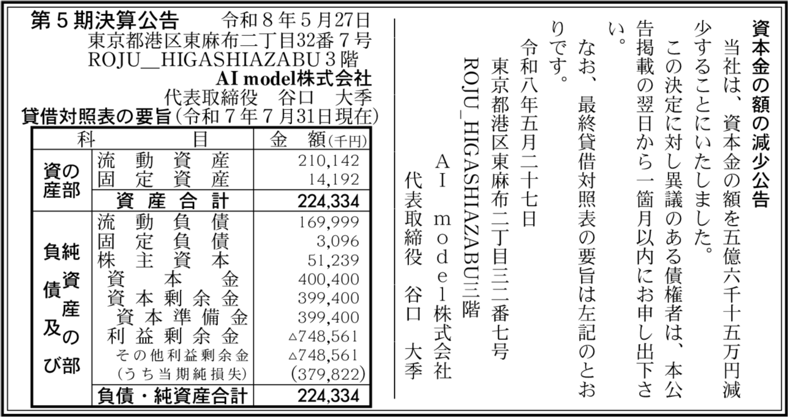
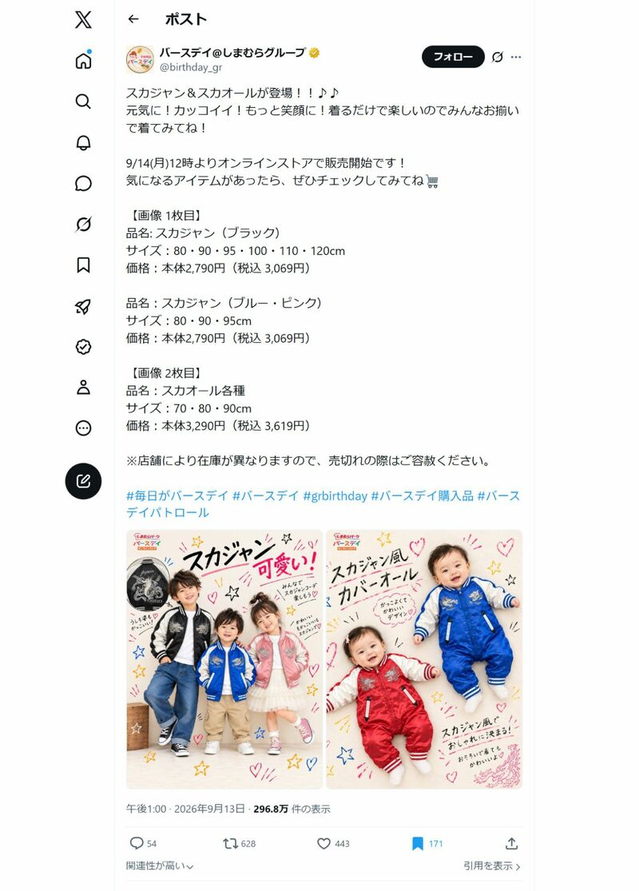

ECアパレル消費者はAIモデルを受け入れるか｜AI model社が約3.8億円の赤字
画像はAI生成のイメージです。特定企業の広告ではありません。
こんにちは、ツバサです。
この記事を書くきっかけは、Xでしまむらグループのベビー・子ども用品店「バースデイ」の広告が炎上しているのを見かけたことでした。話題になっていたのは、子どもがスカジャンやカバーオールを着た広告画像です。登場する子どもの顔や商品の見え方に違和感があるとして、AIで作った画像ではないかと批判が集まっていました。
東洋経済オンラインの2026年9月14日付記事でも、顔が同じように見えることへの抵抗感や、実際に服を着た写真を見たいという反応が紹介されています。なお、同記事によると、この広告でAIを使ったという会社側の発表はありません。
子ども服の広告を見る人にとって、着用画像は、服の形や着たときの雰囲気を確かめるためのものです。その画像に不自然さを感じてしまうと、商品の魅力よりも、画像が本物なのかという疑問に目が向いてしまいます。今回の反応は、AIで人物を作れることと、その人物を使った広告が買い物の参考になることを、分けて考える必要があると感じさせるものでした。
この話題をきっかけに、「しまむら AI」で検索しました。
そこで、しまむらにAIモデルを提供していたAI model株式会社のことを、以前にも「AIモデル着せ替えサービスの料金比較｜EC向け12社まとめ」に書いたと思い出しました。
その後、Googleマップで同社の口コミを見ると、「経営状況ヤバすぎ」というコメントとともに決算公告の画像が添付されていました。そこに載っていたのが、約3.8億円の赤字です。口コミをきっかけに、公告の日付や数字を確認しました。
AI model株式会社の2025年7月期は、当期純損失3億7,982万2,000円でした。しまむらにAIモデルを提供した実績のある会社ですが、この期の最終損益は大きな赤字です。2026年5月27日掲載の第5期決算公告の掲載情報で確認できます。
大手に採用される技術が、提供する会社の利益にもつながっているのか。この記事では、まず決算の数字を確認し、前後の資金調達、本社移転、減資公告を時系列で整理します。そのうえで、AIモデルを使った広告が消費者に受け入れられるかを、今後の収益化に関わる論点として考えます。
対象はAI model株式会社です。一般にAIで生成する人物を指す場合は「AIモデル」と書き分けます。資料の確認日は2026年9月15日です。
目次
AI model社は2025年7月期に約3.8億円の赤字

この決算は、2026年5月27日の減資公告と同時に掲載された、2025年7月期の決算です。右側の減資公告が、左側の貸借対照表を参照する構成になっています。
減資の手続きでは、債権者に最終の貸借対照表の開示状況を示す必要があり、減資公告と貸借対照表を同時に掲載する方法があります（兵庫県官報販売所の説明・発行年不明）。7月決算が続いているなら、2026年5月は次の決算期末を迎える前です。ここで2025年7月期の決算を載せること自体は不自然ではありません。
一方、通常の決算公告は定時株主総会の終了後、遅滞なく行うのが原則です（東京都・官報サービスセンターの説明・発行年不明）。同社の総会開催日や、この同時掲載より前の公告の有無は未確認のため、公告が遅れたかどうかは判断できません。以下の数字は、2026年5月時点の業績ではなく、2025年7月期のものとして読みます。
| 項目 | 2025年7月期の金額 |
|---|---|
| 当期純損失 | 3億7,982万2,000円 |
| 利益剰余金 | マイナス7億4,856万1,000円 |
| 総資産 | 2億2,433万4,000円 |
| 株主資本 | 5,123万9,000円 |
出典は2026年5月27日付・第5期決算公告の写し、および官報決算データベースの掲載情報。写しの金額単位「千円」を円に換算。株主資本は公告の写しで確認。
当期純損失は、その期の最終的な赤字額です。利益剰余金のマイナス約7.5億円は、その1年間だけの赤字額とは異なります。両方を足して損失額を求めると、同じ損失を重ねて数えることになります。
株主資本はプラスで、確認した貸借対照表上、この時点では債務超過ではありません。ただし、約3.8億円の純損失が出たという事実は残ります。導入企業の名前が並ぶ会社紹介とあわせて、損益も見る必要があります。
売上高や営業利益、費用の内訳は、今回確認した公告の要旨には載っていません。会社別の決算一覧や決算期を指定した検索でも、比較できる前後の決算は取得できませんでした。そのため、確認できる表現は「2025年7月期に多額の赤字」であり、前年比で赤字が拡大したか、翌期に改善したかは未確認です。
しまむらへのAIモデル提供から増資・移転・減資までの時系列
しまむらへのAIモデル提供は、2026年に始まった取り組みではありません。発表は2024年6月5日で、この記事の確認時点から約2年前です。資金調達や移転と並べると、決算との前後関係が分かります。
| 時期 | 確認できた出来事 |
|---|---|
| 2024年4月 | 北参道からGROWTH虎ノ門へ移転 |
| 2024年6月5日 | タキヒヨーとの協業による、しまむらへのAIモデル「瑠菜」提供を発表 |
| 2024年10月30日 | シリーズAの第三者割当増資による資金調達を発表。調達額は非公開 |
| 2025年7月31日 | 約3.8億円の純損失を計上した第5期の決算末日 |
| 2025年10月16日 | しまむら公式AIモデル「瑠菜」のInstagramで確認できる最新投稿。2026年9月15日時点で、その後の新規フィード投稿は確認できず |
| 2026年1月23日 | プレシリーズBの第三者割当増資による資金調達を発表。調達額は非公開 |
| 2026年2月24日 | 採用情報に記載された、東麻布への本社移転日 |
| 2026年5月27日 | 第5期決算公告と、資本金5億6,015万円の減少公告 |
2024年にしまむらへ導入し、シリーズAで資金調達
2024年6月5日の同社発表によると、AI model社はタキヒヨーと協業し、しまむらにAIモデル「瑠菜（るな）」を提供しました。SNSに加え、下高井戸店のポスターやチラシでの起用も記載されています。
その後、2024年10月30日にシリーズAの資金調達を発表しています。このラウンドの調達額は非公開です。同社の発表に金額の記載はなく、スピーダ スタートアップ情報リサーチの資金調達ニュース（2024年）でも非公開とされています。しまむらへの提供も、この資金調達も、今回の決算末日より前です。大手への導入発表を経た後の決算でも、会社全体の最終損益は赤字でした。
2026年に再度の資金調達を行い、本社を移転
2026年1月23日の発表では、SBIインベストメント、キヤノン系ファンド、三菱UFJキャピタル、パナソニック系ファンドなどを引受先とするプレシリーズBの増資が公表されました。今回の決算末日より後にも、外部からの資金調達が行われています。このラウンドも調達額は非公開です。同社発表に金額の記載はなく、スピーダの資金調達ニュース（2026年）でも非公開とされています。したがって、今回の約3.8億円の赤字に対して、どれほどの資金を追加調達したのかは比較できません。現在の資金残高も未確認です。
本社も移転しています。同社の採用情報には、2026年2月24日から東麻布の「ROJU HIGASHIAZABU 3階」へ移転した旨が記されています。移転前は住友不動産虎ノ門タワー内のGROWTH虎ノ門でした。
オフィスのグレードはどう変わったか
移転前後で大きく違うのは、建物の規模とオフィスの提供形態です。地上35階の大型タワー内にある家具付きオフィスから、地上3階の低層オフィスビルへ移っています。ただ、建物が低くなったことと、AI model社が使う面積や賃料が減ったことは分けて確認する必要があります。
| 比較項目 | GROWTH虎ノ門（移転前） | ROJU HIGASHIAZABU 3階（移転後） |
|---|---|---|
| 建物 | 住友不動産虎ノ門タワー。地上35階・地下3階 | ROJU HIGASHIAZABU。地上3階・地下1階 |
| 竣工 | 1995年。リニューアル済みフロアあり | 1992年。新耐震基準の建物 |
| 駅からの距離 | 虎ノ門駅徒歩4分。虎ノ門ヒルズ駅・溜池山王駅も利用可能 | 麻布十番駅徒歩4分。赤羽橋駅も利用可能 |
| 建物設備 | 制振構造、3回線受電、貸室扉のICカード対応、イベントホール併設 | 個別空調、男女別トイレ、エレベーター1基、駐車場 |
| オフィスの形態 | 家具付きのスタートアップ支援施設。共用会議室・交流スペースあり | 運営元は各階を基本スケルトン仕様として案内。入居者が内装を整える前提の貸室 |
| 公開されている面積 | 施設の参考プランは約25坪の個室、連結で約50坪。同社の契約面積は未確認 | 3階の募集終了区画は126.19坪（417.15㎡）。同社が全区画を借りたかは未確認 |
出典（2026年9月15日確認）
住友不動産の建物概要、GROWTH虎ノ門の施設案内、YSGホールディングスのROJU公式案内、オフィスターの物件情報（2026年3月31日更新）。公式案内の発行年は明示なし。設備・参考面積は施設の情報であり、AI model社の契約条件ではありません。
住友不動産虎ノ門タワーは、受電設備や制振構造、イベントホールを備えた大型ビルです。一方、ROJU HIGASHIAZABUは低層で、貸室を個別に使うタイプの建物です。大型タワーの設備や共用施設を重視するなら、移転前のほうが充実していたと言えます。ただし、移転先も駅徒歩4分の港区内にあり、1992年竣工と1995年竣工の差だけで、極端に古い建物へ移ったとは言えません。
広さにも注意が必要です。GROWTH虎ノ門が案内する25〜50坪は参考プランで、AI model社の退去時の面積ではありません。東麻布3階の約126坪も募集区画全体の数字です。この2つをそのまま比較して、同社が縮小した、あるいは拡張したとは判断できません。
大手企業に採用されても、利益につながるとは限らない
しまむらへの提供は、AI model社のサービスを企業が採用した実績です。ただ、その発表からは契約額、継続期間、制作原価、同社に残る利益を読み取れません。しまむら向け案件自体が赤字だったという意味でもありません。確認できるのは、導入実績がありながら、2025年7月期の会社全体の最終損益は赤字だったというところまでです。
ここからは、事業の採算についての考察です。発注企業にとって撮影費の削減になるサービスでも、提供側が開発、制作、修正、品質確認に多くの費用をかければ、利益は小さくなります。価格を下げて受注を増やす方法にも、1件ごとの利益をどこまで残せるかという問題があります。ただし、これらが同社の赤字の原因だったかは、費用内訳を確認できていないため判断できません。
増資で入る資金と、顧客へのサービス提供で得る利益も別です。2026年1月の調達は、その時点で出資を受けられたことを示しますが、事業が黒字化した証拠にはなりません。業績を見るには、今後の決算で売上や損益がどう変わるかを確認する必要があります。
しまむら公式AIモデル「瑠菜」のInstagramは約11か月更新がない
導入後の運用にも気になる点があります。しまむら公式AIモデル「瑠菜」のInstagram（@lunagram_158）を確認すると、2026年9月15日時点で確認できる最新のフィード投稿は、2025年10月16日でした。約11か月、新しいフィード投稿を確認できない状態です。
2025年10月16日の投稿は、しまむら公式メディア「しまスタイル」との共同投稿で、瑠菜が着用した秋のアイテムを紹介する内容です。アカウントのプロフィールには、確認時点でも「しまむら 公式AIモデル」と記載されています。
ただし、更新が止まった理由や契約終了の発表は今回確認できていません。ストーリーズや店頭広告などを含む活動全体の停止、しまむらとの取引終了を意味するものではありません。
人物と背景の合成にも違和感が残る
過去の投稿を見ると、更新頻度だけでなく画像の品質も気になります。次の2枚は、しまむら公式AIモデル「瑠菜」のInstagramに掲載された画像です。僕には、人物が背景になじんでおらず、合成の仕上がりが粗く見えます。
祭りの画像は、背景が夕暮れで暗く、屋台にはオレンジ色の明かりが見えます。一方で、人物の顔や白いTシャツは明るく、背景とは光の色や明るさが違って見えます。人物だけ別の場所で撮った写真を重ねたような印象で、その場に立っている感じが弱いと感じました。
ひまわり畑の画像でも、人物と背景の質感や輪郭の見え方に差があります。顔や服はなめらかで、背景の花や葉とは写真の解像感がそろっていないように見えます。僕には、ひまわり畑の前に人物の切り抜きを置いたように感じられました。
これは公開画像を見た僕の評価で、制作工程を確認したものではありません。ただ、公式モデルの投稿として見るなら、顔の自然さだけでなく、背景まで含めて一枚の写真として違和感なく見えるかも大事です。この2枚からは、その仕上げが十分だとは感じられませんでした。なお、いずれも2025年7月期の決算後の投稿であり、今回の赤字やInstagramの更新停止の原因を示すものではありません。
バースデイ広告への反応から考えるAIモデルの受け入れられ方
採算を考えるうえでもう一つ気になるのが、広告を見る消費者の反応です。発注企業がAIで画像を作れることと、その画像を見た人が商品を買いたくなることには、別の検証が必要です。
東洋経済オンラインの2026年9月14日付記事が取り上げたのは、しまむらグループの「バースデイ」が公式Xに投稿した子ども服の広告です。掲載された投稿画像では、9月13日にスカジャンとスカジャン風カバーオールを紹介し、翌14日からオンラインストアで販売すると案内しています。

同記事によると、9月14日14時時点で414万表示、774リポスト、540いいねに達していました。掲載画像には約296.8万表示と写っており、その後さらに閲覧が広がったことが分かります。ただし、表示数は閲覧した人数や批判の件数を表すものではありません。
Xで何が批判されたのか。同記事が紹介した反応を整理すると、主に次の3点です。
- 人物への違和感
子どもの顔が同じように見えて不気味だという声や、子どもをAIで生成すること自体への抵抗感。 - 広告の印象
安っぽく見えるため、商品を買いたい気持ちが薄れるという声。 - 商品画像への不信
画像が改変されているように見えて参考にならず、実際に着用した写真を見たいという声。
これらは同記事が取り上げたXの反応で、投稿全体を集計した結果ではありません。また、AIの利用について会社側の発表はないと同記事は説明しています。AI model社がこの広告を制作したかも、今回の資料では確認できません。
2024年の「瑠菜」提供と、2026年のバースデイ広告への批判は、同じ制作案件として扱えません。後者は2025年7月期の決算より後の出来事でもあり、今回の赤字の原因を示す材料にはなりません。
この報道から考えたいのは、AIモデルを使う広告が消費者に何を伝えられるかです。ECの商品画像なら、服の形、素材の見え方、着たときのサイズ感を確かめる役割があります。仮に制作費を下げられても、商品の実物を想像しにくくなれば、買い物の判断を助ける画像としての価値は下がります。
SNSで批判が出たことだけで、消費者全体が拒絶したとも言えません。同記事は消費者全体を対象とした調査ではなく、AI model社の顧客別売上や受注への影響を示す資料でもありません。継続的に使う価値を確かめるなら、広告への反応に加えて、購入率、返品理由、実物との違いに関する問い合わせなどを見る必要があると考えます。
AmazonではAI生成の人物を含む商品画像に表示が付く
バースデイの広告では、見た人が「AIではないか」と推測していました。Amazonでは、この推測の部分が変わりつつあります。2026年7月22日、Amazonは出品者に対して、フォトリアルなAI生成の人物が写っている商品画像・動画には、アップロード前にメタデータへ「contains-synthetic-performer」というタグを入れるようセラーフォーラムで通知しました。タグが入った画像には、Amazon側がAI生成の人物を含むことを商品ページに表示します。対象は世界中のAmazonストアで、Amazon.co.jpへの出品も含まれます。きっかけは、2026年6月9日に施行されたニューヨーク州の合成パフォーマー開示法です。
バースデイの広告はXへの投稿で、AIを使ったという発表もないため、このルールとは関係がありません。ただ、AIモデルの着用画像をAmazonに出す事業者にとっては、問いが変わります。これまでは「AIだと気づかれるか」でしたが、これからは「AIだと表示されたうえで買ってもらえるか」です。どの画像がタグの対象になるかは、「EC商品画像にAIを使うときの注意点｜3モールの規約と景表法を整理」に整理しています。
AI model社の業績で今後確認したいこと
現時点での中心的な事実は、しまむらへの提供などの導入実績があっても、2025年7月期には約3.8億円の純損失が出ていたことです。その後の増資、本社移転、減資公告まで確認できましたが、それだけで現在の損益や資金繰りを確定することはできません。
僕が次の決算で確認したいのは、損失が縮小しているか、開発や制作にかかる費用を売上でまかなえるようになっているかです。導入事例の件数だけでは、その答えは出ません。AIモデルが消費者の購買判断に役立ち、発注企業が使い続け、その対価で提供会社も利益を残せるのか。この点が、AI model社の今後の業績を見るときの関心です。
FAQ
Q. AI model株式会社の2025年7月期の決算はどうだったのですか？
A. 当期純損失は3億7,982万2,000円でした。2026年5月27日掲載の第5期決算公告で確認できます。株主資本は5,123万9,000円のプラスで、この時点の貸借対照表上は債務超過ではありません。
Q. 利益剰余金のマイナス約7.5億円は、この1年間の赤字額ですか？
A. 違います。2025年7月期の最終的な赤字額は、当期純損失の約3.8億円です。利益剰余金のマイナス7億4,856万1,000円はその1年間だけの赤字額とは異なり、2つを足すと同じ損失を重ねて数えることになります。
Q. しまむらへのAIモデル提供はいつ始まったのですか？
A. AI model社の発表は2024年6月5日です。タキヒヨーとの協業で、しまむらにAIモデル「瑠菜（るな）」を提供し、SNSのほか下高井戸店のポスターやチラシにも起用したと記載されています。
Q. バースデイの子ども服の広告は、AI model社が作ったものですか？
A. 今回の資料では確認できません。東洋経済オンラインの2026年9月14日付記事によると、この広告でAIを使ったという会社側の発表もありません。2024年の「瑠菜」提供とは同じ制作案件として扱えず、2025年7月期の赤字の原因を示す材料にもなりません。
Q. AmazonでAIモデルの着用画像を使うと、商品ページに何か表示されますか？
A. Amazonは2026年7月22日、フォトリアルなAI生成の人物が写った商品画像・動画には、アップロード前にメタデータへ「contains-synthetic-performer」というタグを入れるようセラーフォーラムで通知しました。タグが入った画像には、AI生成の人物を含むことが商品ページに表示されます。Amazon.co.jpへの出品も対象です。
まとめ
うちの会社では、まだAIモデルを導入していません。僕個人としては関心がありますが、今回調べた範囲では、ECアパレルでAIモデルを起用しているブランドはまだ多く見つかりませんでした。さらに、バースデイの広告への反応を調べて、AIを使ったと受け取られる画像に強い抵抗感を示す人もいることが分かりました。
特に気になったのは、手頃な価格を売りにするしまむらグループの広告でも、安っぽく見えるという批判が出ていたことです。価格の安さが魅力になるブランドであっても、広告まで安っぽく見えてよいわけではありません。そう考えると、より価格帯が高く、商品の質感やブランドのイメージを大切にするブランドでは、AIモデルの導入はさらに難しくなるのではないでしょうか。
撮影の手間や費用を減らせることには魅力があります。ただ、画像を見た人が商品そのものに不安を感じたり、買いたい気持ちを失ったりするなら、ECで使う意味は薄れてしまいます。AIモデルに関心はありますが、消費者にどう見えるかを確かめずに導入を決めるのは難しい。今回の記事を書くために調べて、僕はそう感じました。
関連する記事
ツAIモデル着せ替えサービスの料金比較｜EC向け12社まとめtsubasa-memo.github.io/ai-model-tryon.html ツEC商品画像にAIを使うときの注意点｜3モールの規約と景表法を整理tsubasa-memo.github.io/ec-ai-image-rules.html ツ生成AIの信頼度がクチコミを超えた？｜EC担当者が知るべき購買行動の変化【2026年調査まとめ】tsubasa-memo.github.io/ai-ec-consumer-behavior-2026.html ツEC向け商品撮影の代行サービス比較｜1点から頼める7社の料金・特徴まとめtsubasa-memo.github.io/ec-product-photo-service.html ツ景品表示法の社内研修メモ｜EC担当が実務と業者選定で気をつけることtsubasa-memo.github.io/keihyouhou-ec-memo.htmlよく読まれている記事